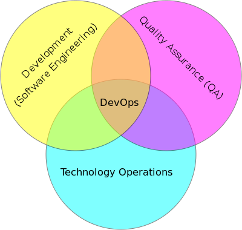

这个词其实行业内并没有公认度很高的中文翻译，故行业内都是用的DevOps这个英文组合词。
- DevOps（Development和Operations的组合词）是一组过程、方法与系统的统称，用于促进开发（应用程序/软件工程）、技术运营和质量保障（QA）部门之间的沟通、协作与整合。

阅读推荐
凤凰计划- 作者是Gene Kim,Kevin Behr,George Spafford，小说体，其中提出的许多内容构成了DevOps的基础概念.DevOps实践指南- 上面那本的姐妹篇，侧重讲解DevOps要解决的问题和解决问题的的基本步骤。
查看本机进程及端口开发和连接情况
Windows:
netstat -ano
Linux:
netstat -anltup
MacOS:
# filter tcp connection
netstat -anl -ptcp
系统日志删除
docker日志清理脚本
1.shell script, script name "clear_all_docker_log.sh"
#!/bin/sh
echo "======== start clean docker containers logs ========"
logs=$(find /var/lib/docker/containers/ -name *-json.log)
for log in $logs
do
echo "clean logs : $log"
cat /dev/null > $log
done
echo "======== end clean docker containers logs ========"
2.deploy
crontab -e
# auto clear docker json log
0 9 * * * /data/tools/clear_all_docker_log.sh > /data/tools/clear_all_docker.log 2>&1
wq!
Linux下清除系统日志方法
错误方法(不能用)
rm -f xxx.log
原因
因为应用已经打开文件句柄，直接删除会造成：
1.应用无法正确释放日志文件和写入
2.显示磁盘空间未释放
补救措施
ps -ef | grep deleted
查看并释放相关资源
正确方法
echo "" > /var/log/xxx.log # 第一种方法
cat /dev/null > /var/log/xxx.log #第二种方法 本人习惯用这个
ubuntu 16.04 系统日志清理
1.shell script auto_clear_sys_log.sh
#!/bin/sh
t=$(date)
echo $t
echo "======== start clean linux sys logs ========"
sudo apt-get clean
logs=$(find /var/log -name "btmp*")
for log in $logs
do
echo "clean logs 1: $log"
cat /dev/null > $log
done
logs=$(find /var/log -name "auth*")
for log in $logs
do
echo "clean logs 2: $log"
cat /dev/null > $log
done
echo "======== end clean linux sys logs ========"
2.deploy
# clear root dir sys log
0 0 0 */3 * echo "rootpassword"|sudo -S /data/tools/auto_clear_sys_log.sh >> /data/tools/auto_clear_sys_log.log 2>&1
Linux常用命令
shell
wc -l #统计行数
uniq -c #在输出行前面加上每行在输入文件里出现的次数
uniq -u #仅显示不反复的行
sort -nr
-n：按照数值的大小排序
-r：以相反的顺序来排序
-k：按照哪一列进行排序
head -3 #取前三名
Linux修改文件所有者和文件所在组
chgrp 用户名 文件名 -R
chown 用户名 文件名 -R
-R表示递归目录下所有文件
chown [-R] 账号名称 文件/目录
chown [-R] 账号名称:组群 文件/目录
awk
awk使用和详解
ag:比awk更好用的搜索工具
搜索工具：the_silver_searcher，安装好后用命令 ag 使用 ***.com
使用方法：
ag pattern # 这里是正则匹配
ag -Q .proto # -Q 搜索字面值
ag -G py$ import # 搜索以py结尾的文件中包含import字符的内容
ag -w proto # -w 全词匹配，不然可能匹配protobuf这类结果
ag --python import # 搜索以py结尾的文件中包含import字符的内容
ag --python import | grep time # ag 配合 grep 使用
注意只要待搜索字符串包含大写字母，ag就会大小写敏感。
命令行一次kill多个pid
打印包含'sign_v1'，且不含有关键字"grep"的进程的pid
ps aux | grep sign_v1 | grep -v grep | awk '{print $2}'
ps -ef | grep sign_v1 | grep -v grep | awk '{print $2}'
批量删除包含'sign_v1'的进程，不含有关键字"grep"的进程
ps aux | grep sign_v1 | grep -v grep | awk '{print $2}' | xargs kill -9
ps -ef | grep sign_v1 | grep -v grep | awk '{print $2}' | xargs kill -9
find命令查找包含指定内容的文件
查找系统当前目录下面的所有文件的内容中包含有csv字符串的文件列表。
# find ./ | xargs grep csv
grep: ./: Is a directory
grep: ./api: Is a directory
./api/api_ca.py: if format == 'csv':
./api/api_ca.py: if format == 'csv':
本机ssl创建https证书
# step 1
# 生成根密钥，访问密码 XXXXXX (自己定义)
openssl genrsa -des3 -out root.key 2048
# 创建根证书申请文件root.csr
openssl req -new -key root.key -out root.csr
# 创建根证书root.crt
openssl x509 -req -days 3650 -sha1 -extensions v3_ca -signkey root.key -in root.csr -out root.crt
======================================================================================================================
# step 2:
# 创建服务器证书密钥 tmp.key
openssl genrsa -out tmp.key 2048
# 创建服务器证书的申请文件tmp.csr
openssl req -new -key tmp.key -out tmp.csr
# 创建服务器证书tmp.crt
openssl x509 -req -days 3650 -sha1 -extensions v3_req -CA root.crt -CAkey root.key -CAserial root.srl -CAcreateserial -in tmp.csr -out tmp.crt
# step 3:
可以将 tmp.crt 和 tmp.key 复制到指定目录，供Nginx使用
轻量级搞事IP应对策略
未待完续
CI/CD框架选型
jenkins+sonarqube+docker+artifactory
Linux的命令常见问题
1.less和more命令的区别
1.操作 more不可以回去,就是不可以向前,只能向后,况且只能使用Enter和Space向后翻动。 less使用vim中的j,k键盘可以上下翻动,还可以使用上下箭头。
2.速度 less不必读整个文件,加载速度会比more更快。
3.内容 less退出后shell不会留下刚显示的内容,而more退出后会在shell上留下刚显示的内容
其它问题
终端实用命令行找回U盘隐藏空间
一般U盘制作系统盘后，总有很多空闲分区无法识别。
而且U盘系统安装盘用完后，如果不需长期留用，自然是想恢复为普通U盘以便日常使用的。
下面就记录下windows和mac os下通过终端恢复U盘隐藏空间的操作。
Mac OS
diskutil list # 查看盘符列表，根据显示内容找到你要格式化的U盘
# 这里假设：disk4是我们的U盘
# 卸载该 U 盘挂载的所有分区/卷组
diskutil unmountDisk /dev/disk4 # 卸载分区disk4
提示：Unmount of all volumes on disk4 was successful
# 对U盘进行擦除并格式化为 ExFAT 格式
diskutil eraseDisk ExFAT udisk disk4
# ExFAT 为 macOS 的扩展日志格式，你也可以格式为JHFS+等格式。
# udisk为你格式化后的U盘名称，disk4 为目标物理磁盘。
当执行完后有如下提示，说明操作成功。
Mounting disk
Finished erase on disk4
实测MacOS下处理其实还更方便一些，ExFAT格式在Windows和Mac下通用，推荐这个。
Windows
流程大致上和Mac类似，区别是使用的命令和软件不同。
Win键+R调出运行，输入cmd，打开cmd窗口。
diskpart
diskpart> list disk
记住你要选择的U盘的编号，这里假定为disk 4
diskpart> select disk 4
选择U盘编号，不放心的话选择后可以再执行一次list disk，会看到物理磁盘4前面有*，表示其已被选中
diskpart> clean
执行后，U盘已清空为未格式化状态。但是这样还没有结束，需要重新为U盘分区，否则U盘无法使用。
重新分区有两种方式，一种是命令行分区，一种是通过计算机管理给U盘分区。这里选择方便的命令行方式。
在保持选中disk 4的基础上，创建卷
diskpart> create partition primary
diskpart> list partition
查看创建的卷
diskpart> select partition 1
选中新建分区，不放心的可以执行 list partition 检查，分区前面有*，表示其已被选中
diskpart> format quick
完成快速格式化
如果这样格式化的U盘格式不是你想要的，可以在电脑上重新执行格式格式化一下。